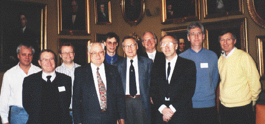

The Aminoff prize is awarded annually by the Royal Swedish Academy of Sciences to pioneering work in crystallography. It is named after Gregori Aminoff who already in his thesis in 1918 used X-ray diffraction to determine the structure of some minerals and was the first in Sweden to apply X-ray crystallographic methods.
The Aminoff prize has this year been awarded to three Dutch researchers, Profs. Aloysio Janner and Ted Janssen from Nijmegen and Pieter Marten de Wolff from Delft, "for their contribution to the theory and practice of modulated structure refinements", The prize was presented to them by H. M. The King Carl XVI Gustaf at the annual meeting of the Academy the 26th of March. Unfortunately Prof de Wolff could not attend for health reasons.
In honour of the prize winners a symposium was arranged 27th - 28th of March at the Academy in Stockholm with about sixty participants from the Nordic countries. The title chosen for the symposium, "Aperiodic crystals - periodic in higher-dimensional space", reflects the approach to solve structures of aperiodic crystals introduced by the prize winners.
In the introductory lecture "Twenty-five years of aperiodic crystals" Ted Janssen outlined the history of aperiodic crystals. It is now 25 years since de Wulff and Janner happened to give their now historic lectures at the same session during the IUCr congress in Kyoto in 1973, at that time without knowledge of each others work.
In crystallography it was long a dogma that a real crystal is of necessity perfectly periodic in three dimensions. But already in the beginning of the twentieth century there were data that could have been interpreted as indications that there are crystals without lattice periodicity. However, these data were not taken seriously until the beginning of the seventies. Early examples were magnetic structures with a helicoidal spin arrangement with a period that is incommensurate with the periods of the underlying lattice. Many other examples were soon found like g-Na2CO3, NaNO2 and thiourea, where the aperiodicity was caused by an incommensurate modulation. Since then hundreds of materials have been found which are as well ordered as the usual crystals but without lattice periodicity. An important part of the earth's crust consists of aperiodic modulated minerals. Other examples are low-dimensional organic conductors and high-temperature superconductors.
The real breakthough to solve modulated structures came with the works by deWolff, Janner and Janssen in the early seventies. They introduced the analysis which has since become standard for modulated phases. By considering the diffraction pattern as n-dimensional the periodicity was re-established. In magnetic helicoidal structures, for example, we get a four-dimensiosal structure, where one of the dimensions corresponds to the independent magnetic structure. The achievements of the three prize-winners has had an enormous importance in practically all studies of modulated structures.
At the Aminoff symposium Aloysio Janner gave a fascinating lecture with the
title "The incommensurate way to the crystallography of snow". He has
analyzed the scaling properties of snow flakes in a very interesting,
although not altogether elementary way; the reader is referred to Acta
Cryst. A53 (1997) 615-631.

Photo taken at the Aminoff Symposium in the Session Hall of the Royal
Swedish Academy of Sciences in Stockholm. Lecturers at the symposium from
left to right:
Vaclav Petricek (Prague), Michael Glazer
(Oxford), Sven Lidin (Stockholm), Aloysio Janner
(Nijmegen), Reine Wallenberg (Lund), Ivar Olovsson
(Uppsala, organizer), Borje Johansson (Uppsala), Ted
Janssen (Nijmegen), Sander van Smaalen (Bayreuth), Gervais
Chapuis (Lausanne)
Seven other scientists gave invited lectures:
Gervais Chapuis, Lausanne: "The art of coping with
stress";
Michael Glazer, Oxford: "Incommensurate diffraction as
an end member of disorder";
Börje Johansson, Uppsala:
"Complex magnetic structures in simple crystal structures"; Sven
Lidin, Stockholm: "Combining electron and X-ray diffraction
methods";
Sander van Smaalen, Bayreuth: "Incommensurate aspects
of atoms, bonds and
electrons in conducting crystals";
Vaclav Petricek, Prague: "The practical application of the
superspace approach in the
crystal structure analysis";
Reine Wallenberg, Lund: "How to modulate structures - and
why".
After returning home Janner and Janssen visited de Wolff to bring him the Aminoff medal. He was very happy with it and they talked a lot about the beginning of the story of aperiodic crystals. We are very sorry to hear that only two weeks later de Wolff passed away. For him the prize was just in time; we are glad that we had time to pay him our respects for his great achievements.
Ivar Olovsson
Chairman Swedish National Committee of Crystallography
 Click here to return to BCA homepage
Click here to return to BCA homepage